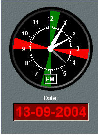

Reloj
Este panel muestra una esfera de reloj de agujas que indica la fecha y hora local correspondiente a la posición de la unidad controlada en la consola. En la esfera aparecen debidamente resaltados los períodos de silencio radio.
